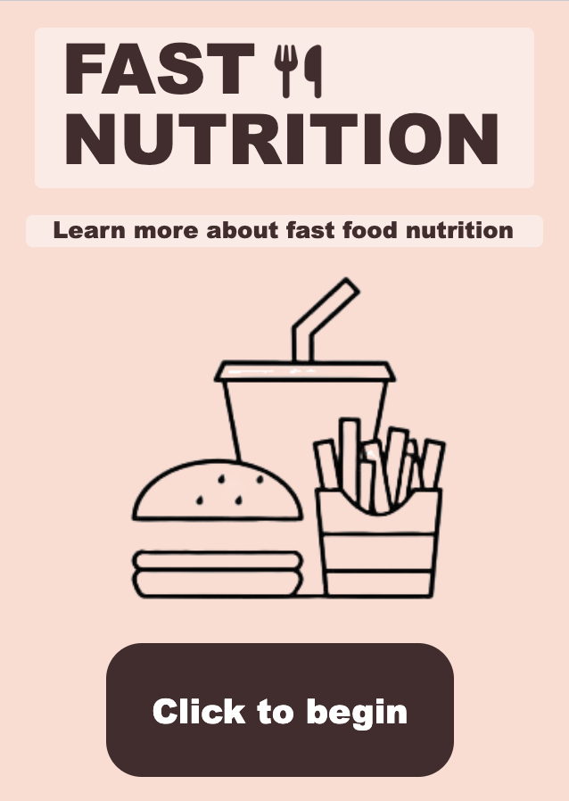
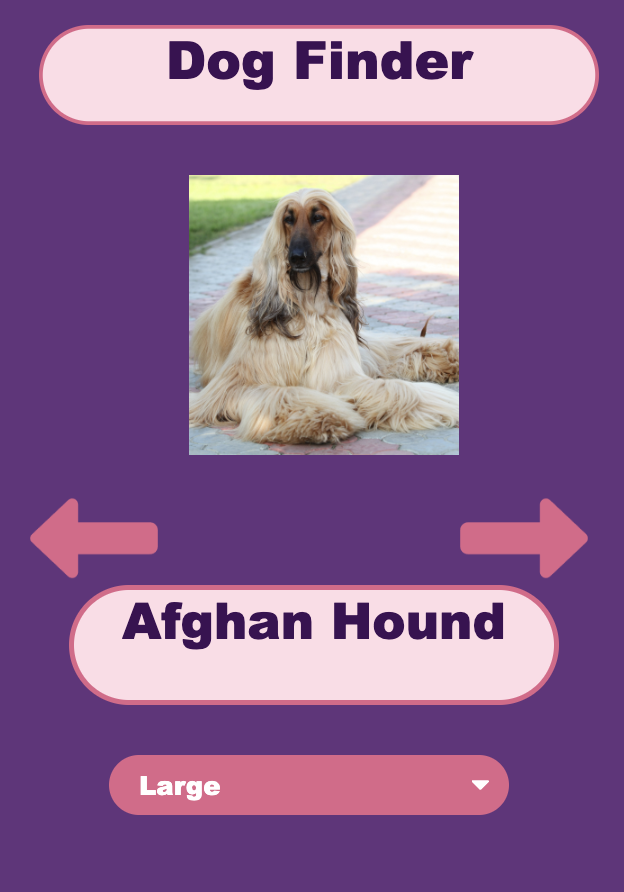

Projects
This is my Unit 6 Hackathon Project. It's designed for users who want to know what goes into their body when consuming fast food.

Source: Code.org app lab
This is my Create Task Project. It is designed for users who are looking to adopt a dog, but don't know what breed they should get.

Source: Code.org app lab